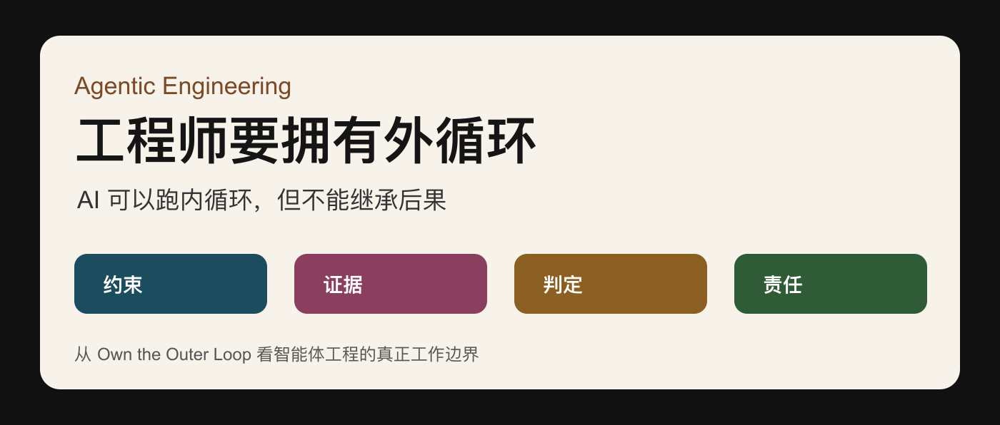
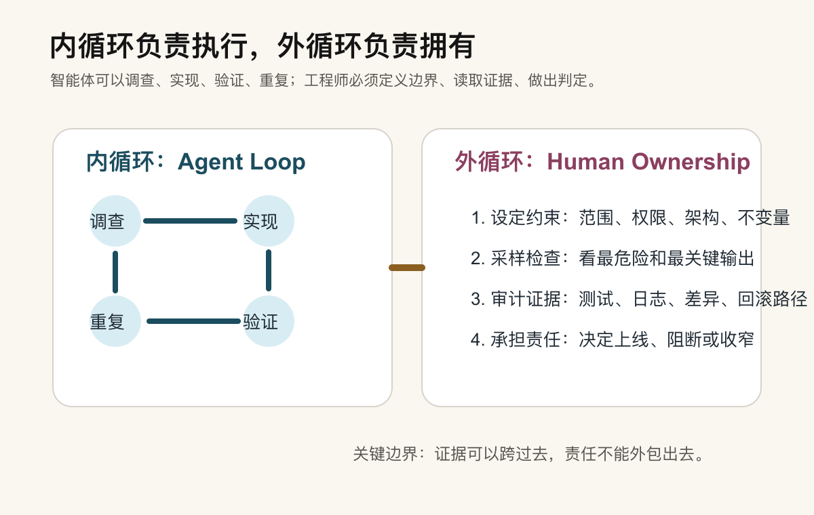
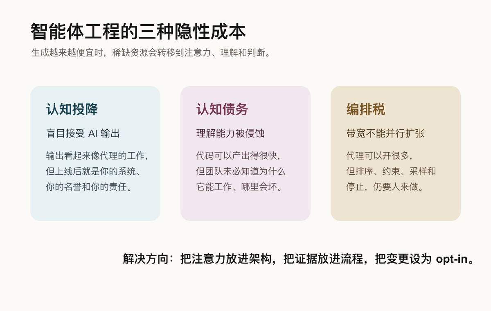
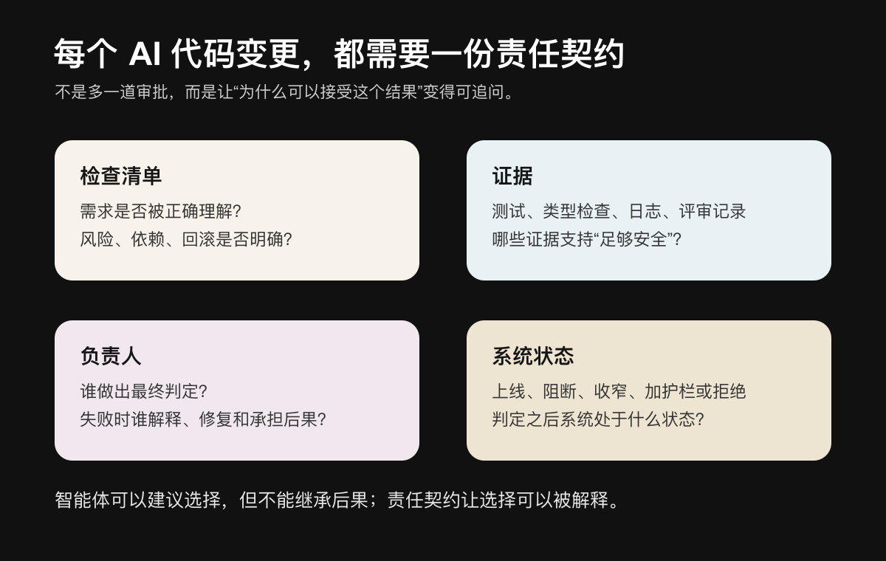

AI 可以写代码，但工程师必须拥有“外循环”
过去一年，关于智能体工程的讨论，正在从“模型能不能写代码”转向一个更现实的问题：当智能体可以调查问题、修改代码、跑测试、提交结果时，工程师到底还负责什么？
Addy Osmani 在《Own the Outer Loop》里给出的答案很直接：智能体可以运行内循环，但工程师必须拥有外循环。
换句话说，AI 可以执行，AI 可以放大产能，AI 甚至可以在较长时间跨度内自主推进任务；但它不能继承后果，不能替团队解释为什么某个变更足够安全，也不能替一个组织承担上线后的责任。

01 稀缺的不再是生成，而是控制
AI 编程工具出现后，软件开发的成本结构正在改变。过去最昂贵的部分，是把东西做出来：拆需求、写代码、补测试、改文档、排评审。现在，代码生成正在变便宜。
原文引用 Sonar 2026 State of Code 报告称，已提交代码中有 42% 是 AI 生成或显著由 AI 辅助完成，并且许多团队预计这个比例还会继续增长。
真正变贵的是另一组东西：审查、验证、理解和维护。
02 智能体跑内循环，人类拥有外循环
智能体运行的循环包括：调查、实现、验证、重复。这个循环可以被设计、复制、并行运行，最后形成所谓的软件工厂。
但软件工厂的中心不是模型，而是一条边界：系统内部发生了什么，系统外部由谁负责。

系统内部，智能体可以接收产品意图、历史上下文、故障信息和用户反馈；它调查问题，提出方案，修改代码，运行验证。然后，一组证据跨过边界，到达拥有下游系统的人手里。
这个人或团队必须决定：上线、阻断、收窄、加护栏、转向，还是直接拒绝。
03 三个关键词：质量、判定、可答责
Quality 不是一句“质量要高”的口号，而是放手之前安装的检查机制。类型检查、测试、hook、沙盒限制、审计日志、监控，这些都是工程系统中的质量信号。
Verdict 是进入下游系统前的最终生产判定。模型可以写出某行代码，但是否接受这段代码，是人的判定。
Answerability 是当别人追问时，你可以解释为什么。可观测性告诉你发生了什么；可答责要求你说清楚为什么这个决定当时是可以接受的，如果错了怎么办。
04 三种隐藏成本
第一种是认知投降：你把任务交给 AI，输出看起来像 AI 的工作，但上线后它就是你的工作。
第二种是认知债务：AI 可以快速产出你短时间内写不出的代码，但这也可能扩大“代码存在”和“团队理解”之间的距离。
第三种是编排税：现在很容易同时开很多个 agent，但人的注意力不能用同样方式并行扩张。

05 棕地系统最危险
在老系统里，真实行为往往不只写在代码里，还藏在迁移历史、客户预期、发布节奏、未明说的假设、边缘数据、运行手册和过去事故留下的痕迹中。
这类系统最怕一句话：“AI 看懂了代码，所以它看懂了系统。”代码只是系统的一部分。生产行为、组织记忆和隐性约束，才是棕地系统最难复制的部分。
06 高能动性不是“全自动”
高能动性不是盲目把任务都丢给 agent，而是知道什么时候委托、什么时候检查、什么时候停止，以及什么时候拥有结果。
AI 会让更多问题变得“看起来可修”。但不是所有可修的问题都值得修，不是所有局部优化都应该进入系统。
07 从开发者到工程师
不是每个能写代码的人都在做工程。工程意味着更严格的工作纪律：逻辑上站得住的推理、对约束和权衡的考虑、对风险暴露面的识别，以及现实的责任承担。
08 给每个 AI 代码变更一份责任契约

- 这个变更解决了什么问题，不解决什么问题？
- 智能体使用了哪些权限、上下文、工具和约束？
- 哪些证据支持它足够安全：测试、类型检查、日志、评审、灰度、回滚？
- 谁做出最终 verdict：上线、阻断、收窄、加护栏还是拒绝？
- 如果判断错了，谁解释、谁修复、谁承担后果？
09 新工作是真工作
当内循环更自动化，外循环会变成更真实、更重要的工作。自动化会创造新的瓶颈。过去的问题是“我们能不能做出来”；未来的问题更像是：“这件事是否应该存在，我们能否为它负责？”
10 结语：构建工厂，保留签名
智能体可以写代码。但在代码到达用户之前，必须有人解释：为什么它应该存在？为什么它足够安全？如果它错了，我们准备怎么处理？
技能带来杠杆，责任把杠杆变成信任。构建软件工厂，保持系统运转，让工作可读、可验证、有人拥有。这就是智能体工程现在真正的工作。